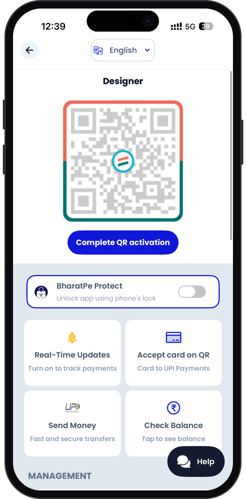
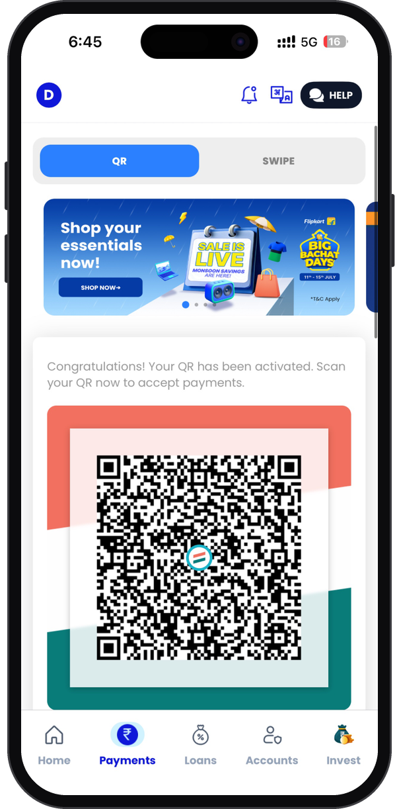

What a shopkeeper needs before trusting a QR code.
Research for the BharatPe merchant app: what a shopkeeper needs before they trust a QR code.


The counter is the test lab
A merchant app gets used in short, distracted bursts, between customers, often on a shared phone, sometimes in a language other than English. A flow that looks simple in Figma can fail at a busy counter.
The research question we started with was simple: what stops a merchant from getting their QR live, and what makes them trust it once it is?
How we ran it
Discussion guide
Open questions about how merchants take payments today, what goes wrong, and who else uses the phone.
In-store interviews
Conversations at the counter, in Hindi and English, so we could watch real interruptions as they happened.
Usability walkthroughs
Merchants went through QR activation and the payment-tracking settings while thinking aloud.
Affinity mapping
Notes clustered into themes, each with a "what we heard" and a "what it could mean for design".
Five things we heard
"Is my QR working yet?"
Merchants weren't always sure whether their QR could accept money. A QR that looks active but isn't means lost sales and an awkward moment with a customer.
"I need to know the money arrived before the customer leaves"
Fake payment screenshots are a real fear at the counter. Merchants wanted confirmation they could trust right away, without opening a statement.
Confidence beats speed
A two-second delay with a clear confirmation felt better to merchants than an instant payment they couldn't verify.
Language is a switch, not a setting
Many merchants were more comfortable in Hindi, and the phone was often shared with family members who preferred something else.
Design for the shared phone
The person who set up the app is not always the person using it at 7pm.
A shared phone needs a lock
When a helper or child uses the phone, merchants worried about who could see their balance or move money.
Security people can find
Protection only works if it's switched on, so it sits where merchants already look.
Help should be one tap away
When something goes wrong mid-transaction, merchants don't search a help centre. They call someone.
Support is part of the flow
For first-time digital merchants, a visible help path is part of feeling safe.
What I took away
The most useful hour of the project was standing behind a counter watching a payment arrive.
Interviews tell you what people think. Being there in context shows you the interruptions, the shared phone and the customer waiting. That's what changed the recommendations. I now try to get into the user's environment on every project, even if it's only a screen-share of how they really work.